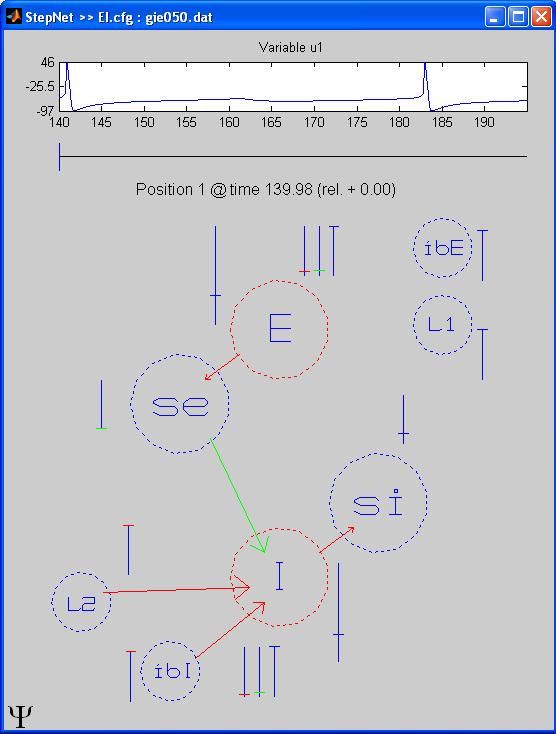

This is a README file for the Dominant-Scale System Reduction Tool ==================================================== Dssrt is currently available at https://github.com/robclewley/DSSRT A PyDSTool dynamical systems environment, pydstool.sourceforge.net, includes some of the functionality of DSSRT in this more flexible (python-based) environment. There's no graphical UI for this new code though - it's more of a programmer's interface! See UserGuide.htm in the Documentation folder to get started with running the program in matlab and pointers to further documentation. Here is a screen shot of the EI_demo prior to computing a transition sequence: (Started with the command DSSRT EI_demo at the matlab prompt) 